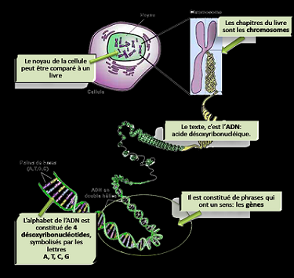

La génétique
Introduction :
Le corps humain est constitué de cellules organiques eucaryotes c’est à dire qu’ils comportent un noyau (contrairement aux cellules procaryotes qui n’en possèdent pas). Ces noyaux contiennent des chromosomes qui contiennent eux-même notre ADN.

Qu’est-ce qu’un chromosome ?
Les chromosomes contiennent les gènes (environ 25 000) et il y en a 23 paires, dans chaque paire, il y a un chromosome d’origine paternelle et un chromosome d’origine maternelle. Les 22 premières paires sont appelés “autosomes” tandis que la 23ème paire définit le sexe de l’individu, deux chromosomes X pour les femmes et un chromosome X et Y pour les hommes.
Qu’est-ce que l’ADN et le gène ?
L’Acide Désoxyribonucléique soit ADN constitue nos chromosomes et porte les gènes, il contient toutes les informations nécessaires au développement et au fonctionnement du corps.
L’ADN est constitué de nucléotides : L’Adénine, la Thymine, la Guanine et la Cytosine formant les couples AT et GC.
Le gène, lui, est un fragment de cet ADN qui correspond à une information génétique. Comme nous possédons chaque chromosome en double, chaque gène est également présent en double dans nos cellules. Ces deux copies d’un même gène, appelées « allèles », sont le plus souvent différentes : une d’origine paternelle et une d’origine maternelle. Les gènes ont donc pour but d’indiquer à chaque cellule son rôle dans l’organisme. Les gènes codent les protéines qui sont des molécules biologiques dont les activités peuvent être très variées. Chaque protéine a donc un rôle différent à jouer:
- -un rôle structural
- -un rôle hormonal
- -un rôle moteur
Par exemple, l’hémoglobine est la protéine qui sert à transporter l’oxygène dans le sang. L’actine et la myosine sont des protéines qui servent à la contraction des muscles. Les anticorps protègent l’organisme des corps étrangers.
Les mutations
L’ADN de chaque humain est pour moitié hérité de son père et pour l’autre de sa mère. C’est pourquoi les maladies génétiques ont la particularité de concerner non seulement la personne atteinte mais aussi sa famille si elle affecte le gène d’une cellule germinale.
Ces mutations ont lieu lors de la réplication de l’ADN et peuvent être amplifiées par des agents mutagènes comme les UV et les rayonnements ionisants. Il existe deux types d’effets ; les effets stochastiques qui sont liés à une dose quelconque d’agent mutagène et les effets déterministes qui sont liés à une dose d’agent mutagène dépassant un certain seuil.
Une anomalie génétique peut perturber la fabrication des protéines. Elle donne en quelque sorte de « mauvais ordres » pour les fabriquer. En effet, l’ARN est une copie de l’ADN, il possède une chromatide et sert à transporter l’information génétique dans le cytoplasme en passant par les pores nucléaires car l’ARN est plus petit que l’ADN et peut donc passer. Une fois dans le cytoplasme, le ribosome se place à partir du codon initiateur, chaque codon est ainsi composé de trois nucléotides à la suite formant une information pour la fabrication de protéines. Le ribosome peut ainsi assembler des acides aminés entre eux et procéder à l’élongation qui est le mécanisme de formation d’une protéine, ce mécanisme se termine lors du passage du ribosome sur le codon “stop”, le ribosome se décroche de la l’ARN et la protéine est libérée. Une protéine est donc composée d’acides aminés et est un enchaînement d’une ou plusieurs chaîne(s) polypeptidique(s).
Ces anomalies génétiques peuvent donc avoir des conséquences sur les protéines: absence de fabrication, excès de fabrication ou fabrication anormale. La protéine ne peut donc plus jouer son rôle ce qui engendre une maladie génétique.
Travail réalisé par Aymeric François, Mike Phillipe et Théo Ernould.